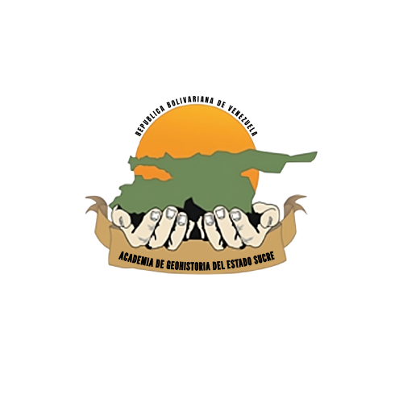

Estudio de fuente · retroproyección + inversión + profundidad
Todo el análisis telesísmico de la fuente del doblete del 24-jun-2026 —la imagen de las dos rupturas, la inversión de la tasa de momento y las pruebas de robustez— corrido de principio a fin en una sola APU de escritorio de consumo.
Estas son cifras del análisis y el cómputo de la fuente sísmica —datos, sismogramas y modelado de la ruptura—. No son cifras de víctimas ni de daños.
Es, en esencia, un PC doméstico: el mismo tipo de máquina con la que cualquiera edita fotos o juega.
| Análisis | Estaciones | Cobertura | Redes |
|---|---|---|---|
| Inversión de tasa de momentotasa de momento m(ξ, t) | 32 | Δ 31°–90°azimut 1°–356° (casi completo) | CI · II · IM · IU |
| Retroproyecciónimagen de las dos fuentes | 2418 Norteamérica + 6 Europa | Δ 31°–78° | BK · CI · II · IM · IU |
| Velocidad de rupturaarreglo denso, ventana fina | 127 | Δ 31°–86° | 17 redes: AK AT AV CC CI CN II IM IU IW LD MX OO SC TX US UU |
Norteamérica, Europa y el Atlántico/Sudamérica aportan cobertura azimutal.
Prácticamente el círculo completo alrededor del epicentro.
Evaluado y descartado con criterio: 0 estaciones alinean y solo 3/31 pasan S/N ≥ 3. No entra en los cálculos.
Un estándar web que permite el acceso uniforme a datos sismológicos —catálogos de terremotos y formas de onda— desde centros de datos de todo el mundo. Por FDSN se obtuvieron los registros telesísmicos y el catálogo de réplicas de esta secuencia. Venezuela cuenta con su propio servicio FDSN, diseñado por Rommel Contreras: catalogosismicovenezuela.sigeos.org — con su API documentada.
Sismogramas sintéticos de Syngine / AxiSEM (modelo ak135f_2s), con física completa P + pP + sP; cada uno pedido al servicio de EarthScope.
Cada una de 450 muestras (180 s a 0,4 s). ~22 MB en disco.
4 313 Green a 5 profundidades · 99,8 % de éxito · una noche continua de descarga.
Solo en la prueba de profundidad (4 313 × 450 muestras).
Green extra para la prueba de padding de bordes.
15,7 millones de elementos · 11,4 millones no nulos.
Una matriz por profundidad → ~68 millones de coeficientes.
6 profundidades × 5 desfases · ~38 s cada una.
Formas de onda observadas ajustadas en simultáneo.
El ensamblaje reproduce el resultado publicado con |m − m_l| = 0 y VR 21,15 % exacta.
El doblete con hueco sobrevive a variar la malla, la longitud de ventana y la profundidad.
VR máxima en 5–10 km; el hueco es insensible a la profundidad (f = 0,13–0,85 %).
El arreglo del sur (Chile) se probó y se excluyó por S/N y geometría — el conteo no se infla.
Detrás de las cifras hay física que puedes manipular. Mueve los controles —velocidad de ruptura β = Vr/c, longitud de falla, energía radiada— y observa en vivo la directividad (el pulso corto y altísimo que recibe La Guaira al frente de la ruptura), el balance de energía y la polarización de la onda S:
Un estudio telesísmico completo de la fuente —imagen de las dos rupturas, inversión de la tasa de momento y su validación en profundidad, ventana y bordes— resuelto con datos abiertos (FDSN / EarthScope) y sintéticos de Syngine, íntegramente en una máquina de consumo.
{kind=link}